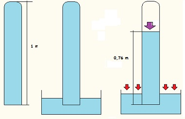

Cuando decimos que un gas está sometido a una cierta presión, debemos de tener en cuenta los conceptos de presión absoluta y presión relativa.
Nosotros vivimos en la atmósfera, que es la capa gaseosa que envuelve a la Tierra. Los gases fundamentales que forman la atmósfera son: nitrógeno (78.084%), oxígeno (20.946%), argón (0.934%) y dióxido de carbono (0.033%). Otros gases de interés presentes en la atmósfera son el vapor de agua, el ozono y diferentes óxidos.
Este aire "pesa", y por lo tanto ejerce una presión. Pero, ¿cuál es el valor de esa presión? Este valor fue determinado por el físico italiano Evangelista Torricelli, en su famoso experimento con el tubo de mercurio:
Torricelli llenó un tubo de 1 m de longitud, cerrado por un extremo, con mercurio. Lo tapó con un dedo (para que no se vertiera) y le dio la vuelta. En una cubeta tenía mercurio. Introdujo el tubo dentro de la cubeta, y una vez sumergido retiró el dedo, y pudo comprobar que el mercurio del tubo descendía, pero siempre se quedaba a una altura de 760 mm, por lo que debía existir "algo" que impidiera que bajase más.

A esto es lo que denominamos presión atmosférica. Como sabemos la presión ejercida vale: p=d*g*h . La densidad del mercurio es de 13600 kg/m3 , por lo que la presión ejercida vale:
p = 9,81*13600*0,76 =101300 pa= 1 atm
Es decir, la atmósfera ejerce una presión de valor 1 atm, sobre todos los cuerpos.
Entonces, cuando se comprime un gas, o se calcula la presión hidrostática, hay que considerar que ambos elementos están a una presión inicial de una atmósfera, por lo que al aumento de presión debo añadirle la presión inicial. La suma de estas dos presiones es lo que se denomina presión absoluta.
Pero la mayoría de los aparatos de medida en neumática e hidráulica, miden la presión tomando como 0 de presión el valor inicial de 1 atm, que es lo que se denomina presión relativa.
Por ejemplo, si comprimimos aire atmosférico y reducimos su volumen a la mitad, éste tendrá una presión absoluta Pa = 2 atm, y una presión relativa Pr= 1 atm.